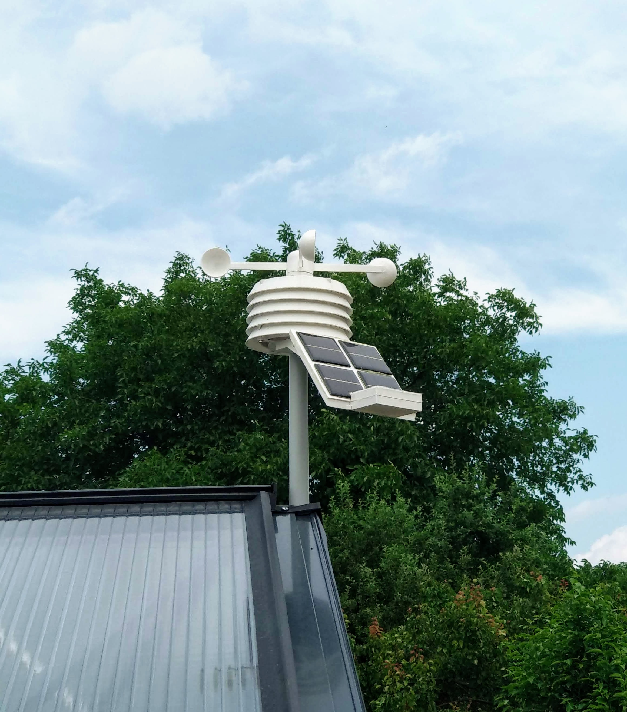

About this project
I built this weatherstation in the beginning of 2021 out of pure interest. This website was then generated for a university course.
All the parts were designed myself and 3D-printed using a modifed Ender3 printer. The 3D-Model is available here and all the code to generate the summaries and plots is available on my github here.
Components
The brain of the weatherstation consists of an ESP8266 DevKit powered by a single 18650 Li-Ion battery which is charged through four small solar panels. The data is generated by the following sensors:- Bosch BME680: Temperature, Humidity, Pressure and Air Quality
- GY-906 DAA (MLX90614): Sky Temperature
- TSL2591: Illumination
- A hall sensor and two magnets for the Anemometer
And here's what it looks like:
